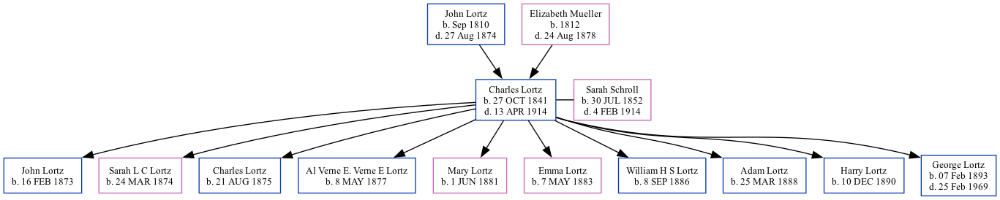

Charles Eugene Lortz 1841 - 1914
[ Home ] | [ Surnames Index ] | [ Family History ]The child of John Lortz and Elizabeth Mueller, , Charles was the great-great-grandfather of Stephanie Hardesty (née Teten), was born in Eric County, Amhurst, New York on Oct 27, 18411,2 and married Sarah Schroll (with whom he had 10 children: John Peter, Sarah L. C, Charles Christian, Al Verne E, Mary A, Emma E, William H. S, Adam J, Harry Ray and George Arthur) in Williams County, Ohio on Sep 28, 1871.
During his life, he was living in Amherst in 18552; and in Liberty, St Joseph, Indiana, USA in 18801.
He died on Apr 13, 1914 in Blaine County, Halsey Thomas, Nebraska.
Parents
- John Adams was born in Sep 1810
- Elizabeth Johanna was born in 1812
Children
- John Peter was born on Feb 16, 1873
- Sarah L. C was born on Mar 24, 1874
- Charles Christian was born on Aug 21, 1875
- Al Verne E was born on May 8, 1877
- Mary A was born on Jun 1, 1881
- Emma E was born on May 7, 1883
- William H. S was born on Sep 8, 1886
- Adam J was born on Mar 25, 1888
- Harry Ray was born on Dec 10, 1890
- George Arthur was born on Feb 7, 1893
Citations
- 1880 United States Federal Census Ancestry.com Operations Inc (Age: 38; Marital Status: Married; Relation to Head of House: Self)
- New York, Erie County Census 1855, 1865, 1875 Ancestry.com Operations, Inc. (Age: 13; Relation to Head: Child)
Family Tree
Data (GEDCOM) maintained by Jay Weston Hannah, Omaha, Nebraska, USA.
Website generated by ged2site. Last updated on Jun 18, 2024.